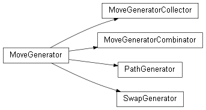

fullrmc.Core package¶
Collection¶
It contains a collection of methods and classes that are useful for the package.
- fullrmc.Core.Collection.SingletonDecorator(cls)¶
A class singleton decorator.
- fullrmc.Core.Collection.is_number(number)¶
check if number is convertible to float.
Parameters: - number (str, number): input number
Returns: - result (bool): True if convertible, False otherwise
- fullrmc.Core.Collection.is_integer(number, precision=1e-09)¶
check if number is convertible to integer.
Parameters: - number (str, number): input number
- precision (number): To avoid floating errors, a precision should be given.
Returns: - result (bool): True if convertible, False otherwise
- fullrmc.Core.Collection.get_elapsed_time(start, format='%d days, %d hours, %d minutes, %d seconds')¶
Gets formated time elapsed.
Parameters: - start (time.time): A time instance.
- format (string): The format string. must contain exactly four ‘%d’.
- fullrmc.Core.Collection.get_path(key=None)¶
get all information needed about the script, the current, and the python executable path.
Parameters: key (None, string): the path to return. If not None, it can take any of the following:
- cwd: current working directory
- script: the script’s total path
- exe: python executable path
- script_name: the script name
- relative_script_dir: the script’s relative directory path
- script_dir: the script’s absolute directory path
- fullrmc: fullrmc package path
Returns: - path (dictionary, value): If key is not None it returns the value of paths dictionary key. Otherwise all the dictionary is returned.
- fullrmc.Core.Collection.get_random_perpendicular_vector(vector)¶
Get random normalized perpendicular vector to a given vector.
Parameters: - vector (numpy.ndarray, list, set, tuple): the vector to compute a random perpendicular vector to it
Returns: - perpVector (numpy.ndarray): the perpendicular vector of type fullrmc.Globals.FLOAT_TYPE
- fullrmc.Core.Collection.get_principal_axis(coordinates, weights=None)¶
Calculates the principal axis of a set of atoms coordinates
Parameters: coordinates (np.ndarray): The atoms coordinates.
- weights (numpy.ndarray, None): the list of weights for the COM calculation.
Must be a numpy.ndarray of numbers of the same length as indexes. None is accepted for equivalent weighting.
Returns: - center (numpy.ndarray): the geometric center of the records.
- eval1 (fullrmc.Globals.FLOAT_TYPE): the biggest eigen value.
- eval2 (fullrmc.Globals.FLOAT_TYPE): the second biggest eigen value.
- eval3 (fullrmc.Globals.FLOAT_TYPE): the smallest eigen value.
- axis1 (numpy.ndarray): the principal axis corresponding to the biggest eigen value.
- axis2 (numpy.ndarray): the principal axis corresponding to the second biggest eigen value.
- axis3 (numpy.ndarray): the principal axis corresponding to the smallest eigen value.
- fullrmc.Core.Collection.get_rotation_matrix(rotationVector, angle)¶
Calculates the rotation (3X3) matrix about an axis by a rotation angle.
Parameters: - rotationVector (list, tuple, numpy.ndarray): the rotation vector coordinates.
- angle (float): the rotation angle in rad.
Returns: - rotationMatrix (numpy.ndarray): the (3X3) rotation matrix
- fullrmc.Core.Collection.rotate(xyzArray, rotationMatrix)¶
Rotates a numpy.array using a rotation matrix. The array itself will be rotated and not a copy of it.
Parameters: - indexes (numpy.ndarray): the xyz (N,3) array to rotate.
- rotationMatrix (numpy.ndarray): the (3X3) rotation matrix.
- fullrmc.Core.Collection.orient(xyzArray, arrayAxis, alignToAxis)¶
Rotates xyzArray using the rotation matrix that rotates and aligns arrayAxis to alignToAXis.
Parameters: - xyzArray (numpy.ndarray): the xyz (N,3) array to rotate.
- arrayAxis (list, tuple, numpy.ndarray): xyzArray axis.
- alignToAxis (list, tuple, numpy.ndarray): The axis to align to.
- fullrmc.Core.Collection.generate_points_on_sphere(thetaFrom, thetaTo, phiFrom, phiTo, npoints=1, check=False)¶
Generate random points on a sphere of radius 1. Points are generated using spherical coordinates arguments as in figure below. Theta [0,Pi] is the angle between the generated point and Z axis. Phi [0,2Pi] is the angle between the generated point and x axis.

Parameters: - thetaFrom (number): The minimum theta value.
- thetaTo (number): The maximum theta value.
- phiFrom (number): The minimum phi value.
- phiTo (number): The maximum phi value.
- npoints (integer): The number of points to generate
- check (boolean): whether to check arguments before generating points.
Returns: - x (numpy.ndarray): The (npoints,1) numpy array of all generated points x coordinates.
- y (numpy.ndarray): The (npoints,1) numpy array of all generated points y coordinates.
- z (numpy.ndarray): The (npoints,1) numpy array of all generated points z coordinates.
- fullrmc.Core.Collection.find_extrema(x, max=True, min=True, strict=False, withend=False)¶
Get a vector extrema indexes and values.
Parameters: - max (boolean): Whether to index the maxima
- min (boolean): Whether to index the minima
- strict (boolean): Whether not to index changes to zero gradient
- withend (boolean): Whether to always include x[0] and x[-1]
Returns: - indexes (numpy.ndarray): Extrema indexes
- values (numpy.ndarray): Extrema values
- fullrmc.Core.Collection.convert_Gr_to_gr(Gr, minIndex)¶
Converts G(r) to g(r) by computing the following \(g(r)=1+(\frac{G(r)}{4 \pi \rho_{0} r})\)
Parameters: - Gr (numpy.ndarray): The G(r) numpy array of shape (number of points, 2)
- minIndex (int, tuple): The minima indexes to compute the number density rho0. It can be a single peak or a list of peaks to compute the mean slope instead.
Returns: - minimas (numpy.ndarray): The minimas array found using minIndex and used to compute the slope and therefore \(\rho_{0}\).
- slope (float): The computed slope from the minimas.
- rho0 (float): The number density of the material.
- g(r) (numpy.ndarray): the computed g(r).
- fullrmc.Core.Collection.generate_vectors_in_solid_angle(direction, maxAngle, numberOfVectors=1, check=False)¶
Generate random vectors that satisfy angle condition with a direction vector. Angle between any generated vector and direction must be smaller than given maxAngle.

a) 100 vectors generated around OX axis within a maximum angle separation of 30 degrees.

b) 200 vectors generated around [1,-1,1] axis within a maximum angle separation of 45 degrees.

b) 500 vectors generated around [2,5,1] axis within a maximum angle separation of 100 degrees.
Parameters: - direction (number): The direction around which to create the vectors.
- maxAngle (number): The maximum angle allowed.
- numberOfVectors (integer): The number of vectors to generate.
- check (boolean): whether to check arguments before generating vectors.
Returns: - vectors (numpy.ndarray): The (numberOfVectors,3) numpy array of generated vectors.
- fullrmc.Core.Collection.gaussian(x, center=0, FWHM=1, normalize=True, check=True)¶
Compute the normal distribution or gaussian distribution of a given vector. The probability density of the gaussian distribution is: \(f(x,\mu,\sigma) = \frac{1}{\sigma\sqrt{2\pi}} e^{\frac{-(x-\mu)^{2}}{2\sigma^2}}\)
Where:
- \(\mu\) is the center of the gaussian, it is the mean or expectation of the distribution it is called the distribution’s median or mode.
- \(\sigma\) is its standard deviation.
- \(FWHM=2\sqrt{2 ln 2} \sigma\) is the Full Width at Half Maximum of the gaussian.
Parameters: - x (numpy.ndarray): The vector to compute the gaussian
- center (number): The center of the gaussian.
- FWHM (number): The Full Width at Half Maximum of the gaussian.
- normalize(boolean): Whether to normalize the generated gaussian by \(\frac{1}{\sigma\sqrt{2\pi}}\) so the integral is equal to 1.
- check (boolean): whether to check arguments before generating vectors.
- fullrmc.Core.Collection.step_function(x, center=0, FWHM=0.1, height=1, check=True)¶
Compute a step function as the cumulative summation of a gaussian distribution of a given vector.
Parameters: - x (numpy.ndarray): The vector to compute the gaussian
- center (number): The center of the step function which is the the center of the gaussian.
- FWHM (number): The Full Width at Half Maximum of the gaussian.
- height (number): The height of the step function.
- check (boolean): whether to check arguments before generating vectors.
- class fullrmc.Core.Collection.Broadcaster¶
Bases: object
A broadcaster broadcasts a message to all listener throughout execution.
- add_listener(listener)¶
Add listener to the list of listeners
Parameters: - listener (object): Any python object having a listen method.
- remove_listener(listener)¶
Remove listener to the list of listeners
Parameters: - listener (object): The listener object to remove.
- broadcast(message, arguments=None)¶
Broadcast a message to all the listeners
Parameters: - message (object): Any type of message object to pass to the listeners.
- arguments (object): Any type of argument to pass to the listeners.
- class fullrmc.Core.Collection.RandomFloatGenerator(lowerLimit, upperLimit)¶
Bases: object
Generate random float number between a lower and an upper limit.
Parameters: - lowerLimit (number): The lower limit allowed.
- upperLimit (number): The upper limit allowed.
- lowerLimit¶
The lower limit of the number generation.
- upperLimit¶
The upper limit of the number generation.
- rang¶
The range defined as upperLimit-lowerLimit.
- set_lower_limit(lowerLimit)¶
Set lower limit.
Parameters: - lowerLimit (number): The lower limit allowed.
- set_upper_limit(upperLimit)¶
Set upper limit.
Parameters: - upperLimit (number): The upper limit allowed.
- generate()¶
Generate a random float number between lowerLimit and upperLimit.
- class fullrmc.Core.Collection.BiasedRandomFloatGenerator(lowerLimit, upperLimit, weights=None, biasRange=None, biasFWHM=None, biasHeight=1, unbiasRange=None, unbiasFWHM=None, unbiasHeight=None, unbiasThreshold=1)¶
Bases: fullrmc.Core.Collection.RandomFloatGenerator
Generate biased random float number between a lower and an upper limit. To bias the generator at a certain number, a bias gaussian is added to the weights scheme at the position of this particular number.

Parameters: - lowerLimit (number): The lower limit allowed.
- upperLimit (number): The upper limit allowed.
- weights (None, list, numpy.ndarray): The weights scheme. The length defines the number of bins and the edges. The length of weights array defines the resolution of the biased numbers generation. If None is given, ones array of length 10000 is automatically generated.
- biasRange(None, number): The bias gaussian range. It must be smaller than half of limits range which is equal to (upperLimit-lowerLimit)/2 If None, it will be automatically set to (upperLimit-lowerLimit)/5
- biasFWHM(None, number): The bias gaussian Full Width at Half Maximum. It must be smaller than half of biasRange. If None, it will be automatically set to biasRange/10
- biasHeight(number): The bias gaussian maximum intensity.
- unbiasRange(None, number): The bias gaussian range. It must be smaller than half of limits range which is equal to (upperLimit-lowerLimit)/2 If None, it will be automatically set to biasRange.
- unbiasFWHM(None, number): The bias gaussian Full Width at Half Maximum. It must be smaller than half of biasRange. If None, it will be automatically set to biasFWHM.
- unbiasHeight(number): The unbias gaussian maximum intensity. If None, it will be automatically set to biasHeight.
- unbiasThreshold(number): unbias is only applied at a certain position only when the position weight is above unbiasThreshold. It must be a positive number.
- originalWeights¶
The original weights as initialized.
- weights¶
The current value weights vector.
- scheme¶
The numbers generation scheme.
- bins¶
The number of bins that is equal to the length of weights vector.
- binWidth¶
The bin width defining the resolution of the biased random number generation.
- bias¶
The bias step-function.
- biasGuassian¶
The bias gaussian function.
- biasRange¶
The bias gaussian extent range.
- biasBins¶
The bias gaussian number of bins.
- biasFWHM¶
The bias gaussian Full Width at Half Maximum.
- biasFWHMBins¶
The bias gaussian Full Width at Half Maximum number of bins.
- unbias¶
The unbias step-function.
- unbiasGuassian¶
The unbias gaussian function.
- unbiasRange¶
The unbias gaussian extent range.
- unbiasBins¶
The unbias gaussian number of bins.
- unbiasFWHM¶
The unbias gaussian Full Width at Half Maximum.
- unbiasFWHMBins¶
The unbias gaussian Full Width at Half Maximum number of bins.
- set_weights(weights=None)¶
Set generator’s weights.
Parameters: - weights (None, list, numpy.ndarray): The weights scheme. The length defines the number of bins and the edges. The length of weights array defines the resolution of the biased numbers generation. If None is given, ones array of length 10000 is automatically generated.
- set_bias(biasRange, biasFWHM, biasHeight)¶
Set generator’s bias gaussian function
Parameters: - biasRange(None, number): The bias gaussian range. It must be smaller than half of limits range which is equal to (upperLimit-lowerLimit)/2 If None, it will be automatically set to (upperLimit-lowerLimit)/5
- biasFWHM(None, number): The bias gaussian Full Width at Half Maximum. It must be smaller than half of biasRange. If None, it will be automatically set to biasRange/10
- biasHeight(number): The bias gaussian maximum intensity.
- set_unbias(unbiasRange, unbiasFWHM, unbiasHeight, unbiasThreshold)¶
Set generator’s unbias gaussian function
Parameters: - unbiasRange(None, number): The bias gaussian range. It must be smaller than half of limits range which is equal to (upperLimit-lowerLimit)/2 If None, it will be automatically set to biasRange.
- unbiasFWHM(None, number): The bias gaussian Full Width at Half Maximum. It must be smaller than half of biasRange. If None, it will be automatically set to biasFWHM.
- unbiasHeight(number): The unbias gaussian maximum intensity. If None, it will be automatically set to biasHeight.
- unbiasThreshold(number): unbias is only applied at a certain position only when the position weight is above unbiasThreshold. It must be a positive number.
- bias_scheme_by_index(index, scaleFactor=None, check=True)¶
Bias the generator’s scheme using the defined bias gaussian function at the given index.
Parameters: - index(integer): The index of the position to bias
- scaleFactor(None, number): Whether to scale the bias gaussian before biasing the scheme. If None, bias gaussian is used as defined.
- check(boolean): Whether to check arguments.
- bias_scheme_at_position(position, scaleFactor=None, check=True)¶
Bias the generator’s scheme using the defined bias gaussian function at the given number.
Parameters: - position(number): The number to bias.
- scaleFactor(None, number): Whether to scale the bias gaussian before biasing the scheme. If None, bias gaussian is used as defined.
- check(boolean): Whether to check arguments.
- unbias_scheme_by_index(index, scaleFactor=None, check=True)¶
Unbias the generator’s scheme using the defined bias gaussian function at the given index.
Parameters: - index(integer): The index of the position to unbias
- scaleFactor(None, number): Whether to scale the unbias gaussian before unbiasing the scheme. If None, unbias gaussian is used as defined.
- check(boolean): Whether to check arguments.
- unbias_scheme_at_position(position, scaleFactor=None, check=True)¶
Unbias the generator’s scheme using the defined bias gaussian function at the given number.
Parameters: - position(number): The number to unbias.
- scaleFactor(None, number): Whether to scale the unbias gaussian before unbiasing the scheme. If None, unbias gaussian is used as defined.
- check(boolean): Whether to check arguments.
- generate()¶
Generate a random float number between the biased range lowerLimit and upperLimit.
- class fullrmc.Core.Collection.RandomIntegerGenerator(lowerLimit, upperLimit)¶
Bases: object
Generate random integer number between a lower and an upper limit.
Parameters: - lowerLimit (number): The lower limit allowed.
- upperLimit (number): The upper limit allowed.
- lowerLimit¶
The lower limit of the number generation.
- upperLimit¶
The upper limit of the number generation.
- rang¶
The range defined as upperLimit-lowerLimit
- set_lower_limit(lowerLimit)¶
Set lower limit.
Parameters: - lowerLimit (number): The lower limit allowed.
- set_upper_limit(upperLimit)¶
Set upper limit.
Parameters: - upperLimit (number): The upper limit allowed.
- generate()¶
Generate a random integer number between lowerLimit and upperLimit.
- class fullrmc.Core.Collection.BiasedRandomIntegerGenerator(lowerLimit, upperLimit, weights=None, biasHeight=1, unbiasHeight=None, unbiasThreshold=1)¶
Bases: fullrmc.Core.Collection.RandomIntegerGenerator
Generate biased random integer number between a lower and an upper limit. To bias the generator at a certain number, a bias height is added to the weights scheme at the position of this particular number.

Parameters: - lowerLimit (integer): The lower limit allowed.
- upperLimit (integer): The upper limit allowed.
- weights (None, list, numpy.ndarray): The weights scheme. The length must be equal to the range between lowerLimit and upperLimit. If None is given, ones array of length upperLimit-lowerLimit+1 is automatically generated.
- biasHeight(number): The weight bias intensity.
- unbiasHeight(None, number): The weight unbias intensity. If None, it will be automatically set to biasHeight.
- unbiasThreshold(number): unbias is only applied at a certain position only when the position weight is above unbiasThreshold. It must be a positive number.
- originalWeights¶
The original weights as initialized.
- weights¶
The current value weights vector.
- scheme¶
The numbers generation scheme.
- bins¶
The number of bins that is equal to the length of weights vector.
- set_weights(weights)¶
Set the generator integer numbers weights.
- weights (None, list, numpy.ndarray): The weights scheme. The length must be equal to the range between lowerLimit and upperLimit. If None is given, ones array of length upperLimit-lowerLimit+1 is automatically generated.
- set_bias_height(biasHeight)¶
Set weight bias intensity.
Parameters: - biasHeight(number): The weight bias intensity.
- set_unbias_height(unbiasHeight)¶
Set weight unbias intensity.
Parameters: - unbiasHeight(None, number): The weight unbias intensity. If None, it will be automatically set to biasHeight.
- set_unbias_threshold(unbiasThreshold)¶
Set weight unbias threshold.
Parameters: - unbiasThreshold(number): unbias is only applied at a certain position only when the position weight is above unbiasThreshold. It must be a positive number.
- bias_scheme_by_index(index, scaleFactor=None, check=True)¶
Bias the generator’s scheme at the given index.
Parameters: - index(integer): The index of the position to bias
- scaleFactor(None, number): Whether to scale the bias gaussian before biasing the scheme. If None, bias gaussian is used as defined.
- check(boolean): Whether to check arguments.
- bias_scheme_at_position(position, scaleFactor=None, check=True)¶
Bias the generator’s scheme at the given number.
Parameters: - position(number): The number to bias.
- scaleFactor(None, number): Whether to scale the bias gaussian before biasing the scheme. If None, bias gaussian is used as defined.
- check(boolean): Whether to check arguments.
- unbias_scheme_by_index(index, scaleFactor=None, check=True)¶
Unbias the generator’s scheme at the given index.
Parameters: - index(integer): The index of the position to unbias
- scaleFactor(None, number): Whether to scale the unbias gaussian before unbiasing the scheme. If None, unbias gaussian is used as defined.
- check(boolean): Whether to check arguments.
- unbias_scheme_at_position(position, scaleFactor=None, check=True)¶
Unbias the generator’s scheme using the defined bias gaussian function at the given number.
Parameters: - position(number): The number to unbias.
- scaleFactor(None, number): Whether to scale the unbias gaussian before unbiasing the scheme. If None, unbias gaussian is used as defined.
- check(boolean): Whether to check arguments.
- generate()¶
Generate a random intger number between the biased range lowerLimit and upperLimit.
- fullrmc.Core.Collection.generate_random_float()¶
random() -> x in the interval [0, 1).
Constraint¶
Constraint contains parent classes for all constraints. A Constraint is used to set certain rules to evolve the configuration. Therefore it has become possible to fully customize and set any possibly imaginable rule.

- class fullrmc.Core.Constraint.Constraint(engine)¶
Bases: object
A constraint is used to direct the evolution of the configuration towards the desired and most meaningful one.
Parameters: - engine (None, fullrmc.Engine): The constraint fullrmc engine.
- engine¶
Get the engine fullrmc instance.
- state¶
Get constraint’s state.
- tried¶
Get constraint’s number of tried moves.
- accepted¶
Get constraint’s number of accepted moves.
- used¶
Get whether this constraint is used in the engine run time or set inactive.
- varianceSquared¶
Get constraint’s varianceSquared used in the engine run time to calculate the total chi square.
- squaredDeviations¶
Get constraint’s current squared deviations.
- originalData¶
Get constraint’s original calculated data upon initialization.
- data¶
Get constraint’s current calculated data.
- activeAtomsDataBeforeMove¶
Get constraint’s current calculated data before last move.
- activeAtomsDataAfterMove¶
Get constraint’s current calculated data after last move.
- afterMoveSquaredDeviations¶
Get constraint’s current calculated SquaredDeviations after last move.
- listen(message, argument=None)¶
Listen’s to any message sent from the Broadcaster.
Parameters: - message (object): Any python object to send to constraint’s listen method.
- arguments (object): Any type of argument to pass to the listeners.
- set_variance_squared(value)¶
Sets constraint’s variance squared that is used in the computation of the total engine chi square.
Parameters: - value (number): Any positive non zero number.
- set_used(value)¶
Sets used flag.
Parameters: - value (boolean): True to use this constraint in engine run time.
- set_state(value)¶
Sets constraint’s state. When constraint’s state and engine’s state don’t match, constraint’s data must be recalculated.
Parameters: - value (object): constraint state value
- set_tried(value)¶
Sets constraint’s engine tried moves.
Parameters: - value (integer): constraint tried moves value
- increment_tried()¶
Increment engine tried moves.
- set_accepted(value)¶
Sets constraint’s engine accepted moves.
Parameters: - value (integer): constraint accepted moves value
- increment_accepted()¶
Increment engine accepted moves.
- set_squared_deviations(value)¶
Sets constraint’s squaredDeviations value.
Parameters: - value (number): squaredDeviations value
- set_data(value)¶
Sets constraint’s data value
Parameters: - value (number): squaredDeviations value.
- set_active_atoms_data_before_move(value)¶
Sets constraint’s before move happens active atoms data value.
Parameters: - value (number): data value
- set_active_atoms_data_after_move(value)¶
Sets constraint’s after move happens active atoms data value.
Parameters: - value (number): data value
- set_after_move_squared_deviations(value)¶
Sets constraint’s squaredDeviations value after move happens.
Parameters: - value (number): squaredDeviations value.
- reset_constraint(reinitialize=True, flags=False, data=False)¶
Resets constraint.
Parameters: - reinitialize (boolean): If set to True, it will override the rest of the flags and will completely reinitialize the constraint.
- flags (boolean): Reset the state, tried and accepted flags of the constraint.
- data (boolean): Reset the constraints computed data.
- set_engine(engine)¶
Sets the constraints fullrmc engine instance. ‘engine changed’ message will be broadcasted automatically to the constraint’s listener listen method.
Parameters: - engine (None, fullrmc.Engine): The constraint fullrmc engine.
- compute_and_set_squared_deviations()¶
Computes and sets the constraint’s squaredDeviations by calling compute_squared_deviations and passing the constraint’s data.
- get_constraint_value()¶
- get_constraint_original_value()¶
- compute_squared_deviations()¶
- compute_data(indexes)¶
- compute_before_move(indexes)¶
- compute_after_move(indexes, movedBoxCoordinates)¶
- accept_move(indexes)¶
- reject_move(indexes)¶
- plot(*args, **kwargs)¶
- class fullrmc.Core.Constraint.ExperimentalConstraint(engine, experimentalData, dataWeights=None, scaleFactor=1.0, adjustScaleFactor=(0, 0.8, 1.2))¶
Bases: fullrmc.Core.Constraint.Constraint
An ExperimentalConstraint is any constraint related to experimental data.
Parameters: engine (None, fullrmc.Engine): The constraint RMC engine.
experimentalData (numpy.ndarray, string): The experimental data as numpy.ndarray or string path to load data using numpy.loadtxt.
dataWeights (None, numpy.ndarray): A weights array of the same number of points of experimentalData used in the constraint’s squared deviations computation. Therefore particular fitting emphasis can be put on different data points that might be considered as more or less important in order to get a reasonable and plausible modal.
If None is given, all data points are considered of the same importance in the computation of the constraint’s squared deviations.
If numpy.ndarray is given, all weights must be positive and all zeros weighted data points won’t contribute to the total constraint’s squared deviations. At least a single weight point is required to be non-zeros and the weights array will be automatically scaled upon setting such as the the sum of all the weights is equal to the number of data points.
scaleFactor (number): A scaling constant multiplying the computed data to normalize to the experimental ones.
adjustScaleFactor (list, tuple): Used to adjust fit or guess the best scale factor during EMC runtime. It must be a list of exactly three entries.
- The frequency in number of accepted moves of finding the best scale factor. If 0 frequency is given, it means that the scale factor is fixed.
- The minimum allowed scale factor value.
- The maximum allowed scale factor value.
NB: If adjustScaleFactor first item (frequency) is 0, the scale factor will remain untouched and the limits minimum and maximum won’t be checked.
- experimentalData¶
Gets the experimental data of the constraint.
- dataWeights¶
Get experimental data points weight
- scaleFactor¶
Get the scaleFactor.
- adjustScaleFactor¶
- adjustScaleFactorFrequency¶
Get the scaleFactor adjustment frequency.
- adjustScaleFactorMinimum¶
Get the scaleFactor adjustment minimum number allowed.
- adjustScaleFactorMaximum¶
Get the scaleFactor adjustment maximum number allowed.
- set_scale_factor(scaleFactor)¶
Sets the scale factor.
Parameters: - scaleFactor (number): A normalization scale factor used to normalize the computed data to the experimental ones.
- set_adjust_scale_factor(adjustScaleFactor)¶
Sets adjust scale factor.
Parameters: - adjustScaleFactor (list, tuple): Used to adjust fit or guess the best scale factor during EMC runtime.
It must be a list of exactly three entries.
- The frequency in number of accepted moves of finding the best scale factor. If 0 frequency is given, it means that the scale factor is fixed.
- The minimum allowed scale factor value.
- The maximum allowed scale factor value.
- adjustScaleFactor (list, tuple): Used to adjust fit or guess the best scale factor during EMC runtime.
It must be a list of exactly three entries.
- set_experimental_data(experimentalData)¶
Sets the constraint’s experimental data.
Parameters: - experimentalData (numpy.ndarray, string): The experimental data as numpy.ndarray or string path to load data using numpy.loadtxt.
- set_data_weights(dataWeights)¶
Set experimental data points weight.
Parameters: dataWeights (None, numpy.ndarray): A weights array of the same number of points of experimentalData used in the constraint’s squared deviations computation. Therefore particular fitting emphasis can be put on different data points that might be considered as more or less important in order to get a reasonable and plausible modal.
If None is given, all data points are considered of the same importance in the computation of the constraint’s squared deviations.
If numpy.ndarray is given, all weights must be positive and all zeros weighted data points won’t contribute to the total constraint’s squared deviations. At least a single weight point is required to be non-zeros and the weights array will be automatically scaled upon setting such as the the sum of all the weights is equal to the number of data points.
- check_experimental_data(experimentalData)¶
Checks the constraint’s experimental data This method must be overloaded in all ExperimentalConstraint sub-classes.
Parameters: - experimentalData (numpy.ndarray): the experimental data numpy.ndarray.
- fit_scale_factor(experimentalData, modelData, dataWeights)¶
The best scale factor value is computed by minimizing \(E=sM\).
- Where:
- \(E\) is the experimental data.
- \(s\) is the scale factor.
- \(M\) is the model constraint data.
Parameters: - experimentalData (numpy.ndarray): the experimental data.
- modelData (numpy.ndarray): the constraint modal data.
- dataWeights (None, numpy.ndarray): the data points weights to compute the scale factor. If None, all data points will be considered as having the same weight.
Returns: - scaleFactor (number): The new scale factor fit value.
NB: This method won’t update the internal scale factor value of the constraint. It always computes the best scale factor given some experimental and model data
- get_adjusted_scale_factor(experimentalData, modelData, dataWeights)¶
Checks if scale factor should be updated according to the given scale factor frequency and engine’s accepted steps. If adjustment is due, a new scale factor will be computed using fit_scale_factor method, otherwise the the constraint’s scale factor will be returned.
Parameters: - experimentalData (numpy.ndarray): the experimental data.
- modelData (numpy.ndarray): the constraint modal data.
- dataWeights (None, numpy.ndarray): the data points weights to compute the scale factor. If None, all data points will be considered as having the same weight.
Returns: - scaleFactor (number): The constraint’s scale factor or the new scale factor fit value.
NB: This method WILL NOT UPDATE the internal scale factor value of the constraint.
- compute_squared_deviations(experimentalData, modelData)¶
Compute the squared deviation between modal computed data and the experimental ones.
\[SD = \sum \limits_{i}^{N} W_{i}(Y(X_{i})-F(X_{i}))^{2}\]Where:
\(N\) is the total number of experimental data points.
\(W_{i}\) is the data point weight. It becomes equivalent to 1 when dataWeights is set to None.
\(Y(X_{i})\) is the experimental data point \(X_{i}\).
\(F(X_{i})\) is the computed from the model data \(X_{i}\).
Parameters: - experimentalData (numpy.ndarray): the experimental data.
- modelData (numpy.ndarray): The data to compare with the experimental one and compute the squared deviation.
Returns: - squaredDeviations (number): The calculated squaredDeviations of the constraint.
- class fullrmc.Core.Constraint.SingularConstraint(engine)¶
Bases: fullrmc.Core.Constraint.Constraint
A singular constraint is a constraint that doesn’t allow multiple instances in the same engine.
- is_singular¶
Get whether only one instance of this constraint type is present in the engine. True for only itself found, False for other instance of the same __class__.__name__
- assert_singular()¶
Checks whether only one instance of this constraint type is present in the engine. Raises Exception if multiple instances are present.
- class fullrmc.Core.Constraint.RigidConstraint(engine, rejectProbability)¶
Bases: fullrmc.Core.Constraint.Constraint
A rigid constraint is a constraint that doesn’t count into the total squaredDeviations of the Engine. But it’s internal squaredDeviations must monotonously decrease or remain the same from one engine step to another. If squaredDeviations of an RigidConstraint increases the step will be rejected even before engine’s new squaredDeviations get computed.
Parameters: - engine (None, fullrmc.Engine): The constraint fullrmc engine.
- rejectProbability (Number): Rejecting probability of all steps where squaredDeviations increases. It must be between 0 and 1 where 1 means rejecting all steps where squaredDeviations increases and 0 means accepting all steps regardless whether squaredDeviations increases or not.
- rejectProbability¶
Get rejection probability.
- set_reject_probability(rejectProbability)¶
Set the rejection probability.
Parameters: - rejectProbability (Number): rejecting probability of all steps where squaredDeviations increases. It must be between 0 and 1 where 1 means rejecting all steps where squaredDeviations increases and 0 means accepting all steps regardless whether squaredDeviations increases or not.
- should_step_get_rejected(squaredDeviations)¶
Given a squaredDeviations, return whether to keep or reject new squaredDeviations according to the constraint rejectProbability.
Parameters: - squaredDeviations (number): The squaredDeviations to compare with the Constraint squaredDeviations
Return: - result (boolean): True to reject step, False to accept
- should_step_get_accepted(squaredDeviations)¶
Given a squaredDeviations, return whether to keep or reject new squaredDeviations according to the constraint rejectProbability.
Parameters: - squaredDeviations (number): The squaredDeviations to compare with the Constraint squaredDeviations
Return: - result (boolean): True to accept step, False to reject
- class fullrmc.Core.Constraint.QuasiRigidConstraint(engine, rejectProbability, thresholdRatio)¶
Bases: fullrmc.Core.Constraint.RigidConstraint
A quasi-rigid constraint is a another rigid constraint but it becomes free above a certain threshold ratio of satisfied data. Every quasi-rigid constraint has its own definition of maximum squared deviations. The ratio is computed as between current squared deviations and maximum squared deviations.
\[ratio = 1-\frac{current\ squared\ deviations}{maximum\ squared\ deviations} \]Parameters: - engine (None, fullrmc.Engine): The constraint fullrmc engine.
- rejectProbability (Number): Rejecting probability of all steps where squaredDeviations increases only before threshold ratio is reached. It must be between 0 and 1 where 1 means rejecting all steps where squaredDeviations increases and 0 means accepting all steps regardless whether squaredDeviations increases or not.
- thresholdRatio(Number): The threshold of satisfied data, above which the constraint become free. It must be between 0 and 1 where 1 means all data must be satisfied and therefore the constraint behave like a RigidConstraint and 0 means none of the data must be satisfied and therefore the constraint becomes always free and useless.
- thresholdRatio¶
Get threshold ratio.
- currentRatio¶
- set_threshold_ratio(thresholdRatio)¶
Set the rejection probability function.
Parameters: - thresholdRatio(Number): The threshold of satisfied data, above which the constraint become free. It must be between 0 and 1 where 1 means all data must be satisfied and therefore the constraint behave like a RigidConstraint and 0 means none of the data must be satisfied and therefore the constraint becomes always free and useless.
- should_step_get_rejected(squaredDeviations)¶
Given a squaredDeviations, return whether to keep or reject new squaredDeviations according to the constraint rejectProbability function.
Parameters: - squaredDeviations (number): The squaredDeviations to compare with the Constraint squaredDeviations
Return: - result (boolean): True to reject step, False to accept
- fullrmc.Core.Constraint.randfloat()¶
random() -> x in the interval [0, 1).
Group¶
Group contains parent classes for all groups. A Group is a set of atoms indexes used to gather atoms and apply actions such as moves upon them. Therefore it has become possible to fully customize and separate atoms to groups and perform reverse monte carlo actions on groups rather than on single atoms.

- class fullrmc.Core.Group.Group(indexes, moveGenerator=None, refine=False)¶
Bases: object
A Group is a set of atoms indexes container.
Parameters: - indexes (np.ndarray, list, set, tuple): list of atoms indexes.
- moveGenerator (None, MoveGenerator): Move generator instance. If None is given TranslationGenerator is considered by default.
- refine (bool): The refinement flag used by the Engine.
# import fullrmc modules from fullrmc.Engine import Engine from fullrmc.Core.Group import Group # create engine ENGINE = Engine(pdb='system.pdb') # Add constraints ... # re-define groups as atoms. groups = [Group([idx]) for idx in ENGINE.pdb.indexes] ENGINE.set_groups( groups ) # Re-define groups generators as needed ... By default TranslationGenerator is used.
- indexes¶
Get the indexes array.
- moveGenerator¶
Get the move generator instance.
- refine¶
Get refine flag.
- set_refine(refine)¶
Sets the selector refine flag.
Parameters: - refine (bool): The selector refinement flag.
- set_indexes(indexes)¶
Sets the group indexes. Indexes redundancy is not checked and indexes order is preserved.
Parameters: - indexes (list,set,tuple,np.ndarray): The group atoms indexes.
- set_move_generator(generator)¶
Set group move generator.
Parameters: - generator (None, MoveGenerator): Move generator instance. If None is given TranslationGenerator is considered by default.
GroupSelector¶
GroupSelector contains parent classes for all group selectors. A GroupSelector is used at the Engine runtime to select groups upon which a move will be applied. Therefore it has become possible to fully customize the selection of groups of atoms and to choose when and how frequently a group can be chosen to perform a move upon.

- class fullrmc.Core.GroupSelector.GroupSelector(engine=None)¶
Bases: object
GroupSelector is the parent class that selects groups to perform moves upon engine runtime.
Parameters: - engine (None, fullrmc.Engine): The selector fullrmc engine instance.
- engine¶
Get the engine instance.
- refine¶
Get refine flag value. It will always return False because refine is a property of RecursiveGroupSelector instances only.
- explore¶
Get explore flag value. It will always return False because explore is a property of RecursiveGroupSelector instances only.
- willSelect¶
Get whether next step a new selection is occur or still the same group is going to be selected again. It will always return True because recurrence is a property of RecursiveGroupSelector instances only.
- willRecur¶
Get whether next step the same group will be returned. It will always return False because this is a property of RecursiveGroupSelector instances only.
- willRefine¶
Get whether selection is recurring and refine flag is True. It will always return False because recurrence is a property of RecursiveGroupSelector instances only.
- willExplore¶
Get whether selection is recurring and explore flag is True. It will always return False because recurrence is a property of RecursiveGroupSelector instances only.
- isNewSelection¶
Get whether the last step a new selection was made. It will always return True because recurrence is a property of RecursiveGroupSelector instances only.
- isRecurring¶
Get whether the last step the same group was returned. It will always return False because this is a property of RecursiveGroupSelector instances only.
- isRefining¶
Get whether selection is recurring and refine flag is True. It will always return False because recurrence is a property of RecursiveGroupSelector instances only.
- isExploring¶
Get whether selection is recurring and explore flag is True. It will always return False because recurrence is a property of RecursiveGroupSelector instances only.
- listen(message, argument=None)¶
Listens to any message sent from the Broadcaster.
Parameters: - message (object): Any python object to send to constraint’s listen method.
- arguments (object): Any type of argument to pass to the listeners.
- set_engine(engine)¶
Sets the selector fullrmc engine instance.
Parameters: - engine (None, fullrmc.Engine): The selector fullrmc engine.
- select_index()¶
This method must be overloaded in every GroupSelector sub-class
Returns: - index (integer): the selected group index in engine groups list
- move_accepted(index)¶
This method is called by the engine when a move generated on a group is accepted. This method is empty must be overloaded when needed.
Parameters: - index (integer): the selected group index in engine groups list
- move_rejected(index)¶
This method is called by the engine when a move generated on a group is rejected. This method is empty must be overloaded when needed.
Parameters: - index (integer): the selected group index in engine groups list
- class fullrmc.Core.GroupSelector.RecursiveGroupSelector(selector, recur=10, override=True, refine=False, explore=False)¶
Bases: fullrmc.Core.GroupSelector.GroupSelector
RecursiveSelector is the only selector that can use the recursive property on a selection. It is used as a wrapper around a GroupSelector instance.
Parameters: - selector (fullrmc.Core.GroupSelector.GroupSelector): The selector instance to wrap.
- recur (integer): Set number of times to recur. It must be a positive integer.
- override (boolean): Override temporary recur value. recur value will be overridden only when selected group move generator is a PathGenerator instance. In this particular case, recur value will be temporary changed to the number of moves stored in the PathGenerator. If selected group move generator is not a PathGenerator instance, recur value will take back its original value.
- refine (boolean): Its an engine flag that is used to refine the position of a group until recurrence expires and a new group is selected. Refinement is done by applying moves upon the selected group always from its initial position at the time it was selected until recurrence expires, then the best position is kept.
- explore (boolean): Its an engine flag that is used to make a group explore the space around it until recurrence expires and a new group is selected. Exploring is done by applying moves upon the selected group starting from its initial position and evolving in a trajectory like way until recurrence expires, then the best position is kept.
NB: refine and explore flags can’t both be set to True at the same time. When this happens refine flag gets automatically switched to False. The usage of those flags is very important because they allow groups of atoms to go out of local minima in the energy surface. The way RMC works is by always minimizing the total energy of the system (error) using gradient descent method. The use of those flags allows the system to go up hill in the energy surface searching for other lower minimas, while always conserving the lowest energy state found and not changing the system structure until a better structure with smaller error is found.
The following video is an example of refining the position of a molecule using RecursiveGroupSelector and setting refine flag to True. The molecule is always refined from its original position towards a new one generated by the move generator.
The following video is an example of exploring the space of a molecule using RecursiveGroupSelector and setting explore flag to True. The molecule explores the allowed space by wandering via its move generator and only moves enhancing the structure are stored.
# import fullrmc modules from fullrmc.Engine import Engine from fullrmc.Core.GroupSelector import RecursiveGroupSelector # create engine ENGINE = Engine(pdb='system.pdb') # Add constraints ... # Re-define groups if needed ... # Re-define groups selector if needed ... ##### Wrap engine group selector with a recursive group selector. ##### # create recursive group selector. Recurrence is set to 20 with explore flag set to True. RGS = RecursiveGroupSelector(ENGINE.groupSelector, recur=20, refine=False, explore=True) ENGINE.set_group_selector(RGS)
- selector¶
Get the wrapped selector instance.
- lastSelectedIndex¶
Get the last selected group index.
- willSelect¶
Get whether next step a new selection is occur or still the same group is going to be selected again.
- willRecur¶
Get whether next step the same group will be returned.
- willRefine¶
Get whether next step the same group will be returned and refine flag is True.
- willExplore¶
Get whether next step the same group will be returned and explore flag is True.
- isNewSelection¶
Get whether this last step a new selection was made.
- isRecurring¶
Get whether this last step the same group was returned.
- isRefining¶
Get whether this last step the same group was returned and refine flag is True.
- isExploring¶
Get whether this last step the same group was returned and explore flag is True.
- override¶
Get override flag value.
- refine¶
Get refine flag value.
- explore¶
Get explore flag value.
- currentRecur¶
Get the current recur value which is selected group dependant when override flag is True.
- recur¶
Get current recur value. The set recur value can change during engine runtime if override flag is True. To get the recur value as set by set_recur method recurAsSet must be used.
- recurAsSet¶
Get recur value as set but set_recur method.
- position¶
Get the position of the selector in the path.
- engine¶
Get the wrapped selector engine instance.
- set_engine(engine)¶
Sets the wrapped selector fullrmc engine instance.
Parameters: - engine (None, fullrmc.Engine): The selector fullrmc engine.
- set_recur(recur)¶
Sets the recur value.
Parameters: - recur (integer): Set the recur value. It must be a positive integer.
- set_override(override)¶
Select override value.
Parameters: - override (boolean): Override selector recur value only when selected group move generator is a PathGenerator instance. Overridden recur value is temporary and totally selected group dependant. If selected group move generator is not a PathGenerator instance, recur value will take back selector’s recur value.
- set_refine(refine)¶
Select override value.
Parameters: - refine (boolean): Its an engine flag that is used to refine the position of a group until recurrence expires and a new group is selected. Refinement is done by applying moves upon the selected group always from its initial position at the time it was selected until recurrence expires, then the best position is kept.
- set_explore(explore)¶
Select override value.
Parameters: - explore (boolean): Its an engine flag that is used to make a group explore the space around it until recurrence expires and a new group is selected. Exploring is done by applying moves upon the selected group starting from its initial position and evolving in a trajectory like way until recurrence expires, then the best position is kept.
- select_index()¶
Select new index.
Returns: - index (integer): the selected group index in engine groups list
MoveGenerator¶
MoveGenerator contains parent classes for all move generators. A MoveGenerator sub-class is used at the Engine runtime to generate moves upon selected groups. Every group has its own MoveGenerator class and definitions, therefore it has become possible to fully customize how a group of atoms should move.

- class fullrmc.Core.MoveGenerator.MoveGenerator(group=None)¶
Bases: object
It is the parent class for all moves generators. This class can’t be instantiated but its sub-classes might be.
Parameters: - group (None, Group): The group instance.
- group¶
Get the group instance.
- listen(message, argument=None)¶
Listens to any message sent from the Broadcaster.
Parameters: - message (object): Any python object to send to constraint’s listen method.
- arguments (object): Any python object.
- set_group(group)¶
Set the MoveGenerator group.
Parameters: - group (None, Group): group instance.
- check_group(group)¶
Checks the generator’s group. This method must be overloaded in all MoveGenerator sub-classes.
Parameters: - group (Group): the Group instance
- transform_coordinates(coordinates, argument=None)¶
Transform coordinates. This method is called in every move. This method must be overloaded in all MoveGenerator sub-classes.
Parameters: - coordinates (np.ndarray): The coordinates on which to apply the move.
- argument (object): Any other argument needed to perform the move. In General it’s not needed.
Returns: - coordinates (np.ndarray): The new coordinates after applying the move.
- move(coordinates)¶
Moves coordinates. This method must NOT be overloaded in MoveGenerator sub-classes.
Parameters: - coordinates (np.ndarray): The coordinates on which to apply the transformation.
Returns: - coordinates (np.ndarray): The new coordinates after applying the transformation.
- class fullrmc.Core.MoveGenerator.SwapGenerator(group=None, swapLength=1, swapList=None)¶
Bases: fullrmc.Core.MoveGenerator.MoveGenerator
It is a particular move generator that instead of generating a move upon a group of atoms, it will exchange the group atom positions with other atoms from swapList. Because the swapList can be big, swapGenerator can be assigned to multiple groups at the same time under the condition of all groups having the same length.
During engine runtime, whenever a swap generator is encountered, all sophisticated selection recurrence modes such as (refining, exploring) will be reduced to simple recurrence.
This class can’t be instantiated but its sub-classes might be.
Parameters: group (None, Group): The group instance.
swapLength (Integer): The swap length that defines the length of the group and the length of the every swap sub-list in swapList.
swapList (None, List): The list of atoms.
If None is given, no swapping or exchanging will be performed.
If List is given, it must contain lists of atoms where every sub-list must have the same number of atoms as the group.
- swapLength¶
Get swap length.
- swapList¶
Get swap list.
- set_swap_length(swapLength)¶
Set swap length. it will reset swaplist automatically.
Parameters: - swapLength (Integer): The swap length that defines the length of the group and the length of the every swap sub-list in swapList.
- set_group(group)¶
Set the MoveGenerator group.
Parameters: - group (None, Group): group instance.
- set_swap_list(swapList)¶
Set the swap-list to exchange atom positions from.
Parameters: swapList (None, List): The list of atoms.
If None is given, no swapping or exchanging will be performed.
If List is given, it must contain lists of atom indxes where every sub-list length must be equal to swapLength.
- append_to_swap_list(subList)¶
append a sub list to swap list
Parameters: - subList (List): The sub-list of atom indexes to append to swapList.
- get_ready_for_move(groupAtomsIndexes)¶
Set the swap generator ready to perform a move. Unlike a normal move generator, swap generators will affect not only the selected atoms but other atoms as well. Therefore at engine runtime, selected atoms will be extended to all affected atoms by the swap.
This method is called automatically upon engine runtime to ensure that all affect atoms with the swap are updated.
Parameters: - groupAtomsIndexes (numpy.ndarray): The atoms indexes to swap.
Returns: - indexes (numpy.ndarray): All the atoms involved in the swap move including the given groupAtomsIndexes.
- transform_coordinates(coordinates, argument=None)¶
Transform coordinates by swapping. This method is called in every move. This method MUST NOT be overloaded in ANY SwapGenerator sub-class.
Parameters: - coordinates (np.ndarray): The coordinates on which to apply the swapping.
- argument (object): Any other argument needed to perform the move. In General it’s not needed.
Returns: - coordinates (np.ndarray): The new coordinates after applying the move.
- class fullrmc.Core.MoveGenerator.PathGenerator(group=None, path=None, randomize=False)¶
Bases: fullrmc.Core.MoveGenerator.MoveGenerator
PathGenerator is a MoveGenerator sub-class where moves definitions are pre-stored in a path and get pulled out at every move step. This class can’t be instantiated but its sub-classes might be.
Parameters: - group (None, Group): The group instance.
- path (None, list): The list of moves.
- randomize (boolean): Whether to pull moves randomly from path or pull moves in order at every step.
- step¶
Get the current step number.
- path¶
Get the path list of moves.
- randomize¶
Get randomize flag.
- check_path(path)¶
Checks the generator’s path. This method must be overloaded in all PathGenerator sub-classes.
Parameters: - path (list): The list of moves.
- normalize_path(path)¶
Normalizes all path moves. It is called automatically upon set_path method is called. This method can be overloaded in all MoveGenerator sub-classes.
Parameters: - path (list): The list of moves.
Returns: - path (list): The list of moves.
- set_path(path)¶
Sets the moves path.
Parameters: - path (list): The list of moves.
- set_randomize(randomize)¶
Sets whether to randomize moves selection.
Parameters: - randomize (boolean): Whether to pull moves randomly from path or pull moves in order at every step.
- move(coordinates)¶
Moves coordinates.
Parameters: - coordinates (np.ndarray): The coordinates on which to apply the transformation
Returns: - coordinates (np.ndarray): The new coordinates after applying the transformation
- class fullrmc.Core.MoveGenerator.MoveGeneratorCombinator(group=None, combination=None, shuffle=False)¶
Bases: fullrmc.Core.MoveGenerator.MoveGenerator
MoveGeneratorCombinator combines all moves of a list of MoveGenerators and applies it at once.
Parameters: - group (None, Group): The constraint RMC engine.
- combination (list): The list of MoveGenerator instances.
- shuffle (boolean): Whether to shuffle generator instances at every move or to combine moves in the list order.
# import fullrmc modules from fullrmc.Engine import Engine from fullrmc.Core.MoveGenerator import MoveGeneratorCombinator from fullrmc.Generators.Translations import TranslationGenerator from fullrmc.Generators.Rotations import RotationGenerator # create engine ENGINE = Engine(pdb='system.pdb') # Add constraints ... # Re-define groups if needed ... ##### Define each group move generator as a combination of a translation and a rotation. ##### # create recursive group selector. Recurrence is set to 20 with explore flag set to True. # shuffle is set to True which means that at every selection the order of move generation # is random. At one step a translation is performed prior to rotation and in another step # the rotation is performed at first. # selected from the collector. for g in ENGINE.groups: # create translation generator TMG = TranslationGenerator(amplitude=0.2) # create rotation generator only when group length is bigger than 1. if len(g)>1: RMG = RotationGenerator(amplitude=2) MG = MoveGeneratorCombinator(collection=[TMG,RMG],shuffle=True) else: MG = MoveGeneratorCombinator(collection=[TMG],shuffle=True) g.set_move_generator( MG )
- shuffle¶
Get shuffle flag.
- combination¶
Get the combination list of MoveGenerator instances.
- check_group(group)¶
Checks the generator’s group. This methods always returns True because normally all combination MoveGenerator instances groups are checked. This method must NOT be overloaded unless needed.
Parameters: - group (Group): the Group instance
- set_group(group)¶
Set the MoveGenerator group.
Parameters: - group (None, Group): group instance.
- set_combination(combination)¶
Sets the generators combination list.
Parameters: - combination (list): The list of MoveGenerator instances.
- set_shuffle(shuffle)¶
Sets whether to shuffle moves generator.
Parameters: - shuffle (boolean): Whether to shuffle generator instances at every move or to combine moves in the list order.
- move(coordinates)¶
Moves coordinates.
Parameters: - coordinates (np.ndarray): The coordinates on which to apply the transformation
Returns: - coordinates (np.ndarray): The new coordinates after applying the transformation
- class fullrmc.Core.MoveGenerator.MoveGeneratorCollector(group=None, collection=None, randomize=True, weights=None)¶
Bases: fullrmc.Core.MoveGenerator.MoveGenerator
MoveGeneratorCollector collects MoveGenerators instances and applies the move of one instance at every step.
Parameters: - group (None, Group): The constraint RMC engine.
- collection (list): The list of MoveGenerator instances.
- randomize (boolean): Whether to pull MoveGenerator instance randomly from collection list or in order.
- weights (None, list): Generators selections Weights list. It must be None for equivalent weighting or list of (generatorIndex, weight) tuples. If randomize is False, weights list is ignored upon generator selection from collection.
# import fullrmc modules from fullrmc.Engine import Engine from fullrmc.Core.MoveGenerator import MoveGeneratorCollector from fullrmc.Generators.Translations import TranslationGenerator from fullrmc.Generators.Rotations import RotationGenerator # create engine ENGINE = Engine(pdb='system.pdb') # Add constraints ... # Re-define groups if needed ... ##### Define each group move generator as a combination of a translation and a rotation. ##### # create recursive group selector. Recurrence is set to 20 with explore flag set to True. # randomize is set to True which means that at every selection a generator is randomly # selected from the collector. for g in ENGINE.groups: # create translation generator TMG = TranslationGenerator(amplitude=0.2) # create rotation generator only when group length is bigger than 1. if len(g)>1: RMG = RotationGenerator(amplitude=2) MG = MoveGeneratorCollector(collection=[TMG,RMG],randomize=True) else: MG = MoveGeneratorCollector(collection=[TMG],randomize=True) g.set_move_generator( MG )
- randomize¶
Get randomize flag.
- collection¶
Get the list of MoveGenerator instances.
- generatorsWeight¶
Generators selection weights list.
- selectionScheme¶
- set_group(group)¶
Set the MoveGenerator group.
Parameters: - group (None, Group): group instance.
- check_group(group)¶
Checks the generator’s group. This methods always returns True because normally all collection MoveGenerator instances groups are checked. This method must NOT be overloaded unless needed.
Parameters: - group (Group): the Group instance.
- set_collection(collection)¶
Sets the generators instances collection list.
Parameters: - collection (list): The list of move generator instance.
- set_randomize(randomize)¶
Sets whether to randomize MoveGenerator instance selection from collection list.
Parameters: - randomize (boolean): Whether to pull MoveGenerator instance randomly from collection list or in order.
- set_weights(weights)¶
Set groups selection weighting scheme.
Parameters: - weights (None, list): Generators selections Weights list. It must be None for equivalent weighting or list of (generatorIndex, weight) tuples. If randomize is False, weights list is ignored upon generator selection from collection.
- set_selection_scheme()¶
Sets selection scheme.
- move(coordinates)¶
Moves coordinates.
Parameters: - coordinates (np.ndarray): The coordinates on which to apply the transformation
Returns: - coordinates (np.ndarray): The new coordinates after applying the transformation
- fullrmc.Core.MoveGenerator.generate_random_float()¶
random() -> x in the interval [0, 1).
angles¶
This is a C compiled Cython generated module to calculate angles constraints. It contains the following methods.
- single_angles: It calculates the angles constraint of a single atom.
Arguments: - centralAtomIndex (int32): The central atom index.
- leftIndexes (int32 array): The centralAtom’s angles left atoms indexes.
- rightIndexes (int32 array): The centralAtom’s angles right atoms indexes. number of leftIndexes must be equal to number of rightIndexes.
- boxCoords (float32 array): The whole system box coordinates.
- basis (float32 array): The box vectors.
- lowerLimit (float32 array): The (numberOfLeftIndexes) array for lower limit or minimum bond length allowed.
- upperLimit (float32 array): The (numberOfLeftIndexes) array for upper limit or maximum bond length allowed.
- reduceAngleToUpper (bool): Whether to reduce angle found out of limits to the difference between the angle and the upper limit. When True, this flag has the higher priority. DEFAULT: False
- reduceAngleToLower (bool): Whether to reduce angle found out of limits to the difference between the angle and the lower limit. When True, this flag may lose its priority for reduceAngleToUpper if the later is True. DEFAULT: False
Returns: - result (python dictionary): It has only two keys.
- angles: The calculated angles (rad).
- reducedAngles: The reduced angles (rad)
- full_angles: It calculates the angles constraint of all atoms given a angles dictionary.
Arguments: - angles (python dictionary): The angles dictionary. Where keys are central atoms indexes and values are dictionary of leftIndexes array, rightIndexes array, lowerLimit array, upperLimit array
- boxCoords (float32 array): The whole system box coordinates.
- basis (float32 array): The box vectors.
- reduceAngleToUpper (bool): Whether to reduce angle found out of limits to the difference between the angle and the upper limit. When True, this flag has the higher priority. DEFAULT: False
- reduceAngleToLower (bool): Whether to reduce angle found out of limits to the difference between the angle and the lower limit. When True, this flag may lose its priority for reduceAngleToUpper if the later is True. DEFAULT: False
Returns: - result (python dictionary): where keys are central atoms indexes and values are dictionaries of exactly two keys as such.
- angles: The calculated bonds length
- reducedAngles: The reduced bonds length
bonds¶
This is a C compiled Cython generated module to calculate bonds constraints. It contains the following methods.
- single_bonds: It calculates the bonds constraint of a single atom.
Arguments: - atomIndex (int32): The index of the atom.
- bondedIndexes (int32 array): The bonded atoms indexes array.
- boxCoords (float32 array): The whole system box coordinates.
- basis (float32 array): The box vectors.
- lowerLimit (float32 array): The (numberOfBondedAtoms) array for lower limit or minimum bond length allowed.
- upperLimit (float32 array): The (numberOfBondedAtoms) array for upper limit or maximum bond length allowed.
- reduceDistanceToUpper (bool): Whether to reduce bonds length found out of limits to the difference between the bond length and the upper limit. When True, this flag has the higher priority. DEFAULT: False
- reduceDistanceToLower (bool): Whether to reduce bonds length found out of limits to the difference between the bond length and the lower limit. When True, this flag may lose its priority for reduceDistanceToUpper if the later is True. DEFAULT: False
Returns: - result (python dictionary): It has only two keys.
- bondsLength: The calculated bonds length
- reducedDistances: The reduced bonds length
- full_bonds: It calculates the bonds constraint of all atoms given a bonds dictionary.
Arguments: - bonds (python dictionary): The bonds dictionary. Where keys are atoms indexes and values are dictionary of bondedIndexes array, lowerLimit array, upperLimit array
- boxCoords (float32 array): The whole system box coordinates.
- basis (float32 array): The box vectors.
- reduceDistanceToUpper (bool): Whether to reduce bonds length found out of limits to the difference between the bond length and the upper limit. When True, this flag has the higher priority. DEFAULT: False
- reduceDistanceToLower (bool): Whether to reduce bonds length found out of limits to the difference between the bond length and the lower limit. When True, this flag may lose its priority for reduceDistanceToUpper if the later is True. DEFAULT: False
Returns: - result (python dictionary): where keys are atomsIndexes and values are dictionaries of exactly two keys as such.
- bondsLength: The calculated bonds length
- reducedDistances: The reduced bonds length
distances¶
This is a C compiled Cython generated module to calculate distances constraints. It contains the following methods.
- single_distances: It calculates the distances constraint of a single atom.
Arguments: - atomIndex (int32): The index of the atom.
- boxCoords (float32 array): The whole system box coordinates.
- basis (float32 array): The box vectors.
- moleculeIndex (int32 array): The molecule’s index array, assigning a molecule index for every atom.
- elementIndex (int32 array): The element’s index array, assigning an element index for every atom.
- dintra (float32 array): The (numberOfElements,numberOfElements,1) array for intra-molecular counted distances.
- dinter (float32 array): The (numberOfElements,numberOfElements,1) array for inter-molecular counted distances.
- nintra (float32 array): The (numberOfElements,numberOfElements,1) array for intra-molecular counted elements.
- ninter (float32 array): The (numberOfElements,numberOfElements,1) array for inter-molecular counted elements.
- lowerLimit (float32 array): The (numberOfElements,numberOfElements,1) array of lower distance limits.
- upperLimit (float32 array): The (numberOfElements,numberOfElements,1) array of upper distance limits.
- interMolecular (bool): Whether to consider inter-molecular distances. DEFAULT: True
- intraMolecular (bool): Whether to consider intra-molecular distances. DEFAULT: True
- countWithinLimits (bool): Whether to count distances and atoms found within the lower and upper limits or outside. DEFAULT: True
- reduceDistanceToUpper (bool): Whether to reduce counted distances to the difference between the found distance and the upper limit. When True, this flag has the higher priority. DEFAULT: False
- reduceDistanceToLower (bool): Whether to reduce counted distances to the difference between the found distance and the lower limit. When True, this flag may lose its priority for reduceDistanceToUpper if the later is True. DEFAULT: False
- reduceDistance (bool): Whether to reduce counted distances to the difference between the found distance and the closest limit. When True, this flag may lose its priority if any of reduceDistanceToLower or reduceDistanceToUpper is True. DEFAULT: False
- allAtoms (bool): Perform the calculation over all the atoms. If False calculation starts from the given atomIndex. DEFAULT: True
Returns: - dintra (float32 array): The updated (numberOfElements,numberOfElements,1) array for intra-molecular counted distances.
- dinter (float32 array): The updated (numberOfElements,numberOfElements,1) array for inter-molecular counted distances.
- nintra (float32 array): The updated (numberOfElements,numberOfElements,1) array for intra-molecular counted elements.
- ninter (float32 array): The updated (numberOfElements,numberOfElements,1) array for inter-molecular counted elements.
- multiple_distances: It calculates the distances constraint of multiple atoms. It creates the inter and intra-molecular histogram distances and numbers arrays and calls single_distances method for every desired atom index.
Arguments: - indexes (int32 array): The atoms indexes array.
- boxCoords (float32 array): The whole system box coordinates.
- basis (float32 array): The box vectors.
- moleculeIndex (int32 array): The molecule’s index array, assigning a molecule index for every atom.
- elementIndex (int32 array): The element’s index array, assigning an element index for every atom.
- numberOfElements (int32): The number of elements in the system.
- lowerLimit (float32 array): The (numberOfElements,numberOfElements,1) array of lower distance limits.
- upperLimit (float32 array): The (numberOfElements,numberOfElements,1) array of upper distance limits.
- interMolecular (bool): Whether to consider inter-molecular distances. DEFAULT: True
- intraMolecular (bool): Whether to consider intra-molecular distances. DEFAULT: True
- countWithinLimits (bool): Whether to count distances and atoms found within the lower and upper limits or outside.
- reduceDistanceToUpper (bool): Whether to reduce counted distances to the difference between the found distance and the upper limit. When True, this flag has the higher priority. DEFAULT: False
- reduceDistanceToLower (bool): Whether to reduce counted distances to the difference between the found distance and the lower limit. When True, this flag may lose its priority for reduceDistanceToUpper if the later is True. DEFAULT: False
- reduceDistance (bool): Whether to reduce counted distances to the difference between the found distance and the closest limit. When True, this flag may lose its priority if any of reduceDistanceToLower or reduceDistanceToUpper is True. DEFAULT: False
- allAtoms (bool): Perform the calculation over all the atoms. If False calculation starts from the given atomIndex. DEFAULT: True
Returns: - dintra (float32 array): The created (numberOfElements,numberOfElements,1) array for intra-molecular counted distances.
- dinter (float32 array): The created (numberOfElements,numberOfElements,1) array for inter-molecular counted distances.
- nintra (float32 array): The created (numberOfElements,numberOfElements,1) array for intra-molecular counted elements.
- ninter (float32 array): The created (numberOfElements,numberOfElements,1) array for inter-molecular counted elements.
- full_distances: It calculates the distances constraint for all atoms. It calls multiple_distances method for all atoms.
Arguments: - boxCoords (float32 array): The whole system box coordinates.
- basis (float32 array): The box vectors.
- moleculeIndex (int32 array): The molecule’s index array, assigning a molecule index for every atom.
- elementIndex (int32 array): The element’s index array, assigning an element index for every atom.
- numberOfElements (int32): The number of elements in the system.
- lowerLimit (float32 array): The (numberOfElements,numberOfElements,1) array of lower distance limits.
- upperLimit (float32 array): The (numberOfElements,numberOfElements,1) array of upper distance limits.
- interMolecular (bool): Whether to consider inter-molecular distances. DEFAULT: True
- intraMolecular (bool): Whether to consider intra-molecular distances. DEFAULT: True
- countWithinLimits (bool): Whether to count distances and atoms found within the lower and upper limits or outside. DEFAULT: True
- reduceDistanceToUpper (bool): Whether to reduce counted distances to the difference between the found distance and the upper limit. When True, this flag has the higher priority. DEFAULT: False
- reduceDistanceToLower (bool): Whether to reduce counted distances to the difference between the found distance and the lower limit. When True, this flag may lose its priority for reduceDistanceToUpper if the later is True. DEFAULT: False
- reduceDistance (bool): Whether to reduce counted distances to the difference between the found distance and the closest limit. When True, this flag may lose its priority if any of reduceDistanceToLower or reduceDistanceToUpper is True. DEFAULT: False
Returns: - dintra (float32 array): The created (numberOfElements,numberOfElements,1) array for intra-molecular counted distances.
- dinter (float32 array): The created (numberOfElements,numberOfElements,1) array for inter-molecular counted distances.
- nintra (float32 array): The created (numberOfElements,numberOfElements,1) array for intra-molecular counted elements.
- ninter (float32 array): The created (numberOfElements,numberOfElements,1) array for inter-molecular counted elements.
improper_angles¶
This is a C compiled Cython generated module to calculate angles constraints. It contains the following methods.
- single_improper_angles: It calculates the improper angles constraint between an improper atom and a plane atoms.
- The plane normal vector is calculated using the right-hand rule where thumb=ox vector, index=oy vector hence oz=normal=second finger
Arguments: - improperAtomIndex (int32): The atom index that must be in plane.
- oAtomIndex (int32 array): The first atom index to build the plane considered as origin.
- xAtomIndex (int32 array): The second atom index to build the plane considered as ox vector. number of oAtomIndex must be equal to number of xAtomIndex.
- yAtomIndex (int32 array): The third atom index to build the plane considered as oy vector. number of xAtomIndex must be equal to number of yAtomIndex.
- boxCoords (float32 array): The whole system box coordinates.
- basis (float32 array): The box vectors.
- lowerLimit (float32 array): The (oAtomIndex) array for lower limit or minimum bond length allowed.
- upperLimit (float32 array): The (oAtomIndex) array for upper limit or maximum bond length allowed.
- reduceAngleToUpper (bool): Whether to reduce angle found out of limits to the difference between the angle and the upper limit. When True, this flag has the higher priority. DEFAULT: False
- reduceAngleToLower (bool): Whether to reduce angle found out of limits to the difference between the angle and the lower limit. When True, this flag may lose its priority for reduceAngleToUpper if the later is True. DEFAULT: False
Returns: - result (python dictionary): It has only two keys.
- angles: The calculated angles (rad).
- reducedAngles: The reduced angles (rad)
- full_improper_angles: It calculates the improper angles constraint of all atoms given a angles dictionary.
Arguments: - angles (python dictionary): The angles dictionary. Where keys are the improper atoms indexes and values are dictionary of oAtomIndex array, xAtomIndex array, yAtomIndex array, lowerLimit array, upperLimit array
- boxCoords (float32 array): The whole system box coordinates.
- basis (float32 array): The box vectors.
- reduceAngleToUpper (bool): Whether to reduce angle found out of limits to the difference between the angle and the upper limit. When True, this flag has the higher priority. DEFAULT: False
- reduceAngleToLower (bool): Whether to reduce angle found out of limits to the difference between the angle and the lower limit. When True, this flag may lose its priority for reduceAngleToUpper if the later is True. DEFAULT: False
Returns: - result (python dictionary): where keys are central atoms indexes and values are dictionaries of exactly two keys as such.
- angles: The calculated bonds length
- reducedAngles: The reduced bonds length
pair_distribution_histogram¶
This is a C compiled Cython generated module to calculate pair distribution histograms. It contains the following methods.
single_pair_distribution_histograms: It calculates the pair distribution histograms of a single atom.
Arguments:
- atomIndex (int32): The index of the atom.
- boxCoords (float32 array): The whole system box coordinates.
- basis (float32 array): The box vectors.
- moleculeIndex (int32 array): The molecule’s index array, assigning a molecule index for every atom.
- elementIndex (int32 array): The element’s index array, assigning an element index for every atom.
- hintra (float32 array): The (numberOfElements,numberOfElements,1) array for intra-molecular distances histograms.
- hinter (float32 array): The (numberOfElements,numberOfElements,1) array for inter-molecular distances histograms.
- minDistance (float32): The minimum distance to be counted in the histogram.
- maxDistance (float32): The maximum distance to be counted in the histogram.
- bin (bool): The histogram bin size.
- allAtoms (bool): Perform the calculation over all the atoms. If False calculation starts from the given atomIndex. DEFAULT: True
Returns:
- hintra (float32 array): The updated (numberOfElements,numberOfElements,1) array for intra-molecular distances histograms.
- hinter (float32 array): The updated (numberOfElements,numberOfElements,1) array for inter-molecular distances histograms.
- multiple_pair_distribution_histograms: It calculates the pair distribution histograms of multiple atoms.
It creates the inter and intra-molecular distance histograms and calls single_pair_distribution_histograms method for every desired atom index.
Arguments: - atomIndex (int32): The index of the atom.
- boxCoords (float32 array): The whole system box coordinates.
- basis (float32 array): The box vectors.
- moleculeIndex (int32 array): The molecule’s index array, assigning a molecule index for every atom.
- numberOfElements (int32): The number of elements in the system.
- elementIndex (int32 array): The element’s index array, assigning an element index for every atom.
- minDistance (float32): The minimum distance to be counted in the histogram.
- maxDistance (float32): The maximum distance to be counted in the histogram.
- histSize(int32): The histograms size.
- bin (bool): The histogram bin size.
- allAtoms (bool): Perform the calculation over all the atoms. If False calculation starts from the given atomIndex. DEFAULT: True
Returns: - hintra (float32 array): The created (numberOfElements,numberOfElements,1) array for intra-molecular distances histograms.
- hinter (float32 array): The created (numberOfElements,numberOfElements,1) array for inter-molecular distances histograms.
- full_pair_distribution_histograms: It calculates the pair distribution histograms of all atoms.
It calls multiple_distances method for all atoms.
Arguments: - atomIndex (int32): The index of the atom.
- boxCoords (float32 array): The whole system box coordinates.
- basis (float32 array): The box vectors.
- moleculeIndex (int32 array): The molecule’s index array, assigning a molecule index for every atom.
- numberOfElements (int32): The number of elements in the system.
- elementIndex (int32 array): The element’s index array, assigning an element index for every atom.
- minDistance (float32): The minimum distance to be counted in the histogram.
- maxDistance (float32): The maximum distance to be counted in the histogram.
- histSize(int32): The histograms size.
- bin (bool): The histogram bin size.
Returns: - hintra (float32 array): The created (numberOfElements,numberOfElements,1) array for intra-molecular distances histograms.
- hinter (float32 array): The created (numberOfElements,numberOfElements,1) array for inter-molecular distances histograms.
atomic_coordination_number¶
This is a C++ compiled Cython generated module to calculate atomic coordination number constraints. It contains the following methods.
- single_shell_coordination_number: It computes the neighbours indexes around a certain atom
- within a lower and upper shell limits.
Arguments: - atomIndex (int32): The atom index to compute the neighbour atom indexes around.
- boxCoords (float32 array): The whole system box coordinates.
- basis (float32 array): The box vectors.
- moleculeIndex (int32 array): The molecule’s index array, assigning a molecule index for every atom.
- indexes (int32 array): The indexes of atoms to find neighbours from.
- lowerLimit (float32 array): The coordination number shell lower limit or minimum distance.
- upperLimit (float32 array): The coordination number shell upper limit or maximum distance.
Returns: - neighbours (python List): List of neighbours indexes.
- single_atomic_coordination_number: It computes the coordination number around a certain atom
- in all defined shells.
Arguments: - atomIndex (int32): The atom index to compute the neighbour atom indexes around.
- boxCoords (float32 array): The whole system box coordinates.
- basis (float32 array): The box vectors.
- moleculeIndex (int32 array): The molecule’s index array, assigning a molecule index for every atom.
- typesIndex (int32 array): The atoms’s types array, assigning a type for every atom.
- typesDefinition (python dictionary): The coordination number definition per atom type.
- typeIndexesLUT (python dictionary): The dictionary of all types grouped in key: list of atoms indexes.
- coordNumData (python List): The coordination number data.
Returns: - coordNumData (python List): The coordination number data updated.
- multiple_atomic_coordination_number: It computes the coordination number of multiple atoms.
Arguments: - indexes (int32): The list of atoms to compute their coordination number.
- boxCoords (float32 array): The whole system box coordinates.
- basis (float32 array): The box vectors.
- moleculeIndex (int32 array): The molecule’s index array, assigning a molecule index for every atom.
- typesIndex (int32 array): The atoms’s types array, assigning a type for every atom.
- typesDefinition (python dictionary): The coordination number definition per atom type.
- typeIndexesLUT (python dictionary): The dictionary of all types grouped in key: list of atoms indexes.
- coordNumData (python List): The coordination number data.
Returns: - coordNumData (python List): The coordination number data updated.
- full_atomic_coordination_number: It computes the coordination number of all system’s atoms.
Arguments: - boxCoords (float32 array): The whole system box coordinates.
- basis (float32 array): The box vectors.
- moleculeIndex (int32 array): The molecule’s index array, assigning a molecule index for every atom.
- typesIndex (int32 array): The atoms’s types array, assigning a type for every atom.
- typesDefinition (python dictionary): The coordination number definition per atom type.
- typeIndexesLUT (python dictionary): The dictionary of all types grouped in key: list of atoms indexes.
- coordNumData (python List): The coordination number data.
Returns: - coordNumData (python List): The coordination number data updated.
- atom_coordination_number_data: It cocd mputes all coordination number informations and atoms
- involved in a given atom coordination number calculation.
Arguments: - atomIndex (int32): The atom index to compute the neighbour atom indexes around.
- boxCoords (float32 array): The whole system box coordinates.
- basis (float32 array): The box vectors.
- moleculeIndex (int32 array): The molecule’s index array, assigning a molecule index for every atom.
- typesIndex (int32 array): The atoms’s types array, assigning a type for every atom.
- typesDefinition (python dictionary): The coordination number definition per atom type.
Returns: - atoms (python List): The List of atoms involved in a way or another with the coordination number of atomIndex.
- shells (python List): The List of shells indexes corresponding to the list of atoms.
- neighbours (python List): The List of atoms found neighbouring atoms in corresponding shells.
boundary_conditions_collection¶
This is a C compiled Cython generated module to transform coordinates. It contains the following methods.
- get_reciprocal_basis: Computes reciprocal box matrix.
Arguments: - basis (float32 array): The (3,3) box matrix
Returns: - rbasis (float32 array): The (3,3) reciprocal box matrix.
- transform_coordinates: Transforms coordinates array using a transformation matrix.
Arguments: - transMatrix (float32 array): The (3,3) transformation matrix
- coords (float32 array): The (N,3) coordinates array.
Returns: - transCoords (float32 array): The (N,3) transformed coordinates array.
- box_coordinates_real_distances: Computes atomic real distances given box coordinates.
Arguments: - atomIndex (int32): The index of atom to compute the distance from.
- indexes (int32 array): The list of atom indexes to compute the distance to
- boxCoords (float32 array): The (N,3) box coordinates array.
- basis (float32 array): The (3,3) box matrix
Returns: - distances (float32 array): The (N,) distances array.
- fullrmc.Core.boundary_conditions_collection.box_coordinates_real_distances()¶
- fullrmc.Core.boundary_conditions_collection.get_reciprocal_basis()¶
- fullrmc.Core.boundary_conditions_collection.transform_coordinates()¶